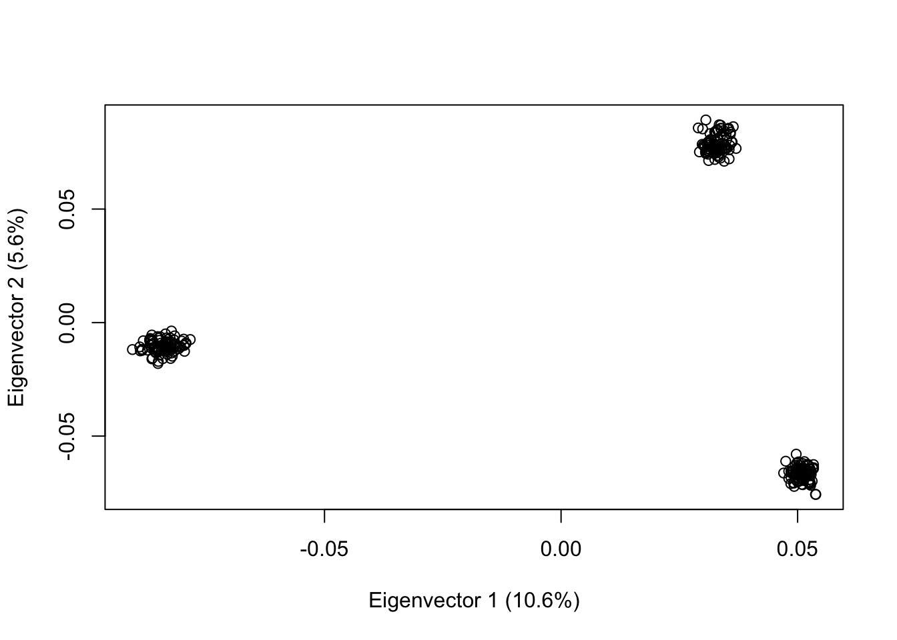

12 Week 6 Workshop B - Reproducible research and R notebooks
12.1 Learning Objectives
At the conclusion of today’s workshop students are expected to be able to:
- Understand how to format an R notebook
- Install Bioconductor packages for VCF manipulation
- Observe some common workflows for SNP data using various Bioconductor packages
- Appreciate the importance of reproducible research
- Run and knit an R notebook, then save it as a PDF
12.2 Workshop Setup
To prepare for today’s workshop activities you need to have a working copy of R and RStudio installed.
You should also read the two papers on reproducible research, which can be found in the Week 6 content.
12.3 Customizing R notebooks
Matt will give you a brief presentation on R notebook formatting, with an emphasis on the text sections rather than on code.
12.4 R packages and Bioconductor
Most R packages can be downloaded using the install.packages() function.
However, many bioinformatics-specific packages are located in the Bioconductor repository, which requires you to download a special package manager called BiocManager.
if (!requireNamespace("BiocManager", quietly=TRUE))
install.packages("BiocManager")Then, we’re going to install two Bioconductor packages. The first package, gdsfmt, converts various genotype formats (including VCF) to the GDS format, which is easier and faster for R to access. The second package, SNPRelate, contains several functions for calculating relatedness and population structure.
BiocManager::install("gdsfmt")
BiocManager::install("SNPRelate")Sometimes, it can be a little difficult to get a working Bioconductor installation, so we will be dedicating a portion of the class to making sure this works.
12.5 Showcasing some features of the SNPRelate package
The following content is heavily based on the primary tutorial for the SNPRelate package, with some additional commentary. Don’t worry about understanding all of the code, this is intended to just be a demonstration of some basic features. You will learn how to use these commands and data objects in future weeks.
First, we’ll load the relevant packages into the R environment with the require()** command.
require(gdsfmt)Loading required package: gdsfmtrequire(SNPRelate)Loading required package: SNPRelateSNPRelate12.6 Accessing GDS files
We’re going to open a GDS file bundled with SNPRelate that contains some data from the HapMap project. In future weeks, we will discuss importing VCF files and converting them into GDS objects.
genofile <- snpgdsOpen(snpgdsExampleFileName())12.7 Examining the structure of a GDS file
We can examine the GDS file with the snpgdsSummary() command, as well as just invoking the object directly. You can see that this contains a lot of the same information as a VCF file - we can see chromosomes, positions of SNPs on chromosomes, as well as some information not typically bundled in a VCF, like population and sex information.
snpgdsSummary(genofile)The file name: /Library/Frameworks/R.framework/Versions/4.2-arm64/Resources/library/SNPRelate/extdata/hapmap_geno.gds
The total number of samples: 279
The total number of SNPs: 9088
SNP genotypes are stored in SNP-major mode (Sample X SNP).genofileFile: /Library/Frameworks/R.framework/Versions/4.2-arm64/Resources/library/SNPRelate/extdata/hapmap_geno.gds (709.6K)
+ [ ] *
|--+ sample.id { VStr8 279 ZIP(29.9%), 679B }
|--+ snp.id { Int32 9088 ZIP(34.8%), 12.3K }
|--+ snp.rs.id { VStr8 9088 ZIP(40.1%), 36.2K }
|--+ snp.position { Int32 9088 ZIP(94.7%), 33.6K }
|--+ snp.chromosome { UInt8 9088 ZIP(0.94%), 85B } *
|--+ snp.allele { VStr8 9088 ZIP(11.3%), 4.0K }
|--+ genotype { Bit2 279x9088, 619.0K } *
\--+ sample.annot [ data.frame ] *
|--+ family.id { VStr8 279 ZIP(34.4%), 514B }
|--+ father.id { VStr8 279 ZIP(31.5%), 220B }
|--+ mother.id { VStr8 279 ZIP(30.9%), 214B }
|--+ sex { VStr8 279 ZIP(17.0%), 95B }
\--+ pop.group { VStr8 279 ZIP(6.18%), 69B }12.8 LD filtering
SNPs close together on a chromosome can be filtered for linkage disequilibrium using snpgdsLDpruning(). This is often a good idea before producing a principal components analysis.
snpset <- snpgdsLDpruning(genofile, ld.threshold=0.25)SNP pruning based on LD:
Excluding 365 SNPs on non-autosomes
Excluding 1 SNP (monomorphic: TRUE, MAF: NaN, missing rate: NaN)
# of samples: 279
# of SNPs: 8,722
using 1 thread
sliding window: 500,000 basepairs, Inf SNPs
|LD| threshold: 0.25
method: composite
Chromosome 1: 82.26%, 589/716
Chromosome 2: 79.51%, 590/742
Chromosome 3: 80.62%, 491/609
Chromosome 4: 81.32%, 457/562
Chromosome 5: 82.86%, 469/566
Chromosome 6: 81.06%, 458/565
Chromosome 7: 81.14%, 383/472
Chromosome 8: 78.28%, 382/488
Chromosome 9: 82.69%, 344/416
Chromosome 10: 83.02%, 401/483
Chromosome 11: 81.88%, 366/447
Chromosome 12: 82.44%, 352/427
Chromosome 13: 82.27%, 283/344
Chromosome 14: 82.27%, 232/282
Chromosome 15: 84.73%, 222/262
Chromosome 16: 80.22%, 223/278
Chromosome 17: 78.74%, 163/207
Chromosome 18: 81.58%, 217/266
Chromosome 19: 90.00%, 108/120
Chromosome 20: 79.91%, 183/229
Chromosome 21: 81.75%, 103/126
Chromosome 22: 83.62%, 97/116
7,113 markers are selected in total.snpset.id <- unlist(unname(snpset))12.9 Using principal components analysis for SNP data
Principal components analysis, a common form of dimensionality reduction, can be a good way to detect if your dataset has geographic/population structure. In this example, we have three populations derived from Western European, Nigerian, and Han Chinese samples. Because these regions are not close together geographically and/or historically, we get clearly defined clusters.
pca <- snpgdsPCA(genofile, num.thread=2)Principal Component Analysis (PCA) on genotypes:
Excluding 365 SNPs on non-autosomes
Excluding 1 SNP (monomorphic: TRUE, MAF: NaN, missing rate: NaN)
# of samples: 279
# of SNPs: 8,722
using 2 threads
# of principal components: 32
PCA: the sum of all selected genotypes (0,1,2) = 2446510
CPU capabilities:
Wed Sep 13 09:38:10 2023 (internal increment: 1760)
[..................................................] 0%, ETC: ---
[==================================================] 100%, completed, 0s
Wed Sep 13 09:38:10 2023 Begin (eigenvalues and eigenvectors)
Wed Sep 13 09:38:10 2023 Done.plot(pca)We can also run our PCA on SNPs filtered for linkage disequilibrium, to see how that might change results.
pca2 <- snpgdsPCA(genofile, snp.id=snpset.id, num.thread=2)Principal Component Analysis (PCA) on genotypes:
Excluding 1,975 SNPs (non-autosomes or non-selection)
Excluding 0 SNP (monomorphic: TRUE, MAF: NaN, missing rate: NaN)
# of samples: 279
# of SNPs: 7,113
using 2 threads
# of principal components: 32
PCA: the sum of all selected genotypes (0,1,2) = 1995142
CPU capabilities:
Wed Sep 13 09:38:13 2023 (internal increment: 1760)
[..................................................] 0%, ETC: ---
[==================================================] 100%, completed, 0s
Wed Sep 13 09:38:13 2023 Begin (eigenvalues and eigenvectors)
Wed Sep 13 09:38:13 2023 Done.plot(pca2)
12.10 A preview of indexing and variable creation using R
Finally, let’s create a variable containing the population information in the GDS file, using R’s indexing syntax. We can then use the which() command with conditional indexing to identify which values correspond to one of the populations. We can then export the sample ID information to a new variable, then index that variable by our population info to produce a PCA of one population grouping. Does it still look like a simple cluster?
read.gdsn(index.gdsn(genofile, "sample.annot"))$pop.group->pops
which(pops=="CEU")->ceu.pop
read.gdsn(index.gdsn(genofile, "sample.id"))->samples
pca3 <- snpgdsPCA(genofile, sample.id = samples[ceu.pop], num.thread=2)Principal Component Analysis (PCA) on genotypes:
Excluding 365 SNPs on non-autosomes
Excluding 1,217 SNPs (monomorphic: TRUE, MAF: NaN, missing rate: NaN)
# of samples: 92
# of SNPs: 7,506
using 2 threads
# of principal components: 32
PCA: the sum of all selected genotypes (0,1,2) = 702139
CPU capabilities:
Wed Sep 13 09:38:13 2023 (internal increment: 5340)
[..................................................] 0%, ETC: ---
[==================================================] 100%, completed, 0s
Wed Sep 13 09:38:13 2023 Begin (eigenvalues and eigenvectors)
Wed Sep 13 09:38:13 2023 Done.plot(pca3)12.11 Closing GDS objects
After working with a GDS object, we need to close it. This can be particularly important in the context of large files.
snpgdsClose(genofile)12.12 Discussion: Reproducibility
Time permitting, we will discuss the two papers about reproducibility in genome-wide association studies.
Key topics:
Why is reproducibility importance in bioinformatics research?
How is reproducibility relevant for bioinformatics in industry/clincal settings?
Are there any features of bioinformatic data that make reproducibility easier?
What features might make reproducibility more difficult?
Contrast the results of the 2001 study with the 2021 study regarding reproducibility in genome-wide assocation studies
How do these papers affect how we examine the scientific literature in a variant curation context?
12.13 Post-class “quiz”
Your task will be to copy the enclosed code into your own R notebook (excluding any package installation commands, please run those on the console directly) and knit it into an HTML file. Once you have done this and loaded the working HTML file in your web browser, use the “Print as PDF” option in your browser to save the knitted HTML document as a PDF.